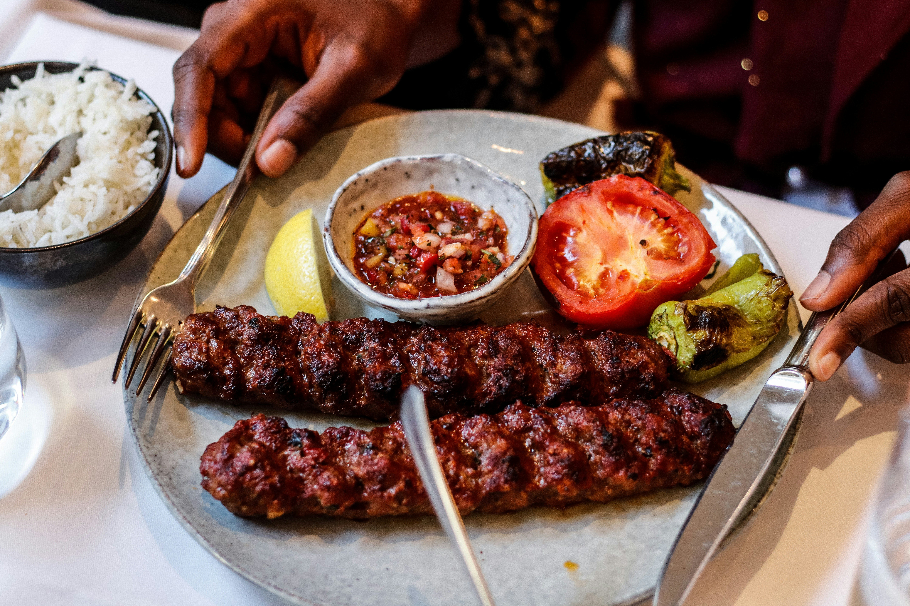

Some Favorite Images


My favorite movie is The Theory of Everything. I like the story, the characters, and the story of Hawking's scientific achievements and his determination to continue his work after being diagnosed with motor neuron disease.
Learn more The Theory of EverythingMy favorite band is Parliament-Funkadelic. They are known for their unique blend of funk, soul, and rock music.
Visit Parliament's wikipedia websiteMy favorite foods include pizza, hamburger and kebab.
| Food | Why I Like It |
|---|---|
| Kebab | It has a delicious grilled flavor. |
| Steak | I like its rich flavor and texture. |
